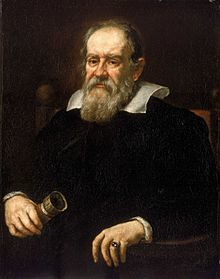
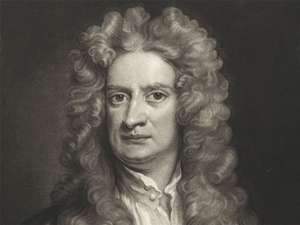
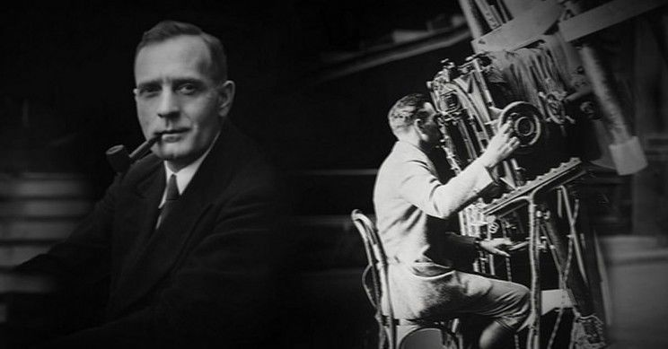

جهد العلماء على مر التاريخ لفهم ما يرونه في السماء بدءًا من نسبية آينشتاين مرورًا بقوانين نيوتن و اكتشافات كيبلر. شرح علماء فلك مشهورون -من بينهم علماء برعوا في مجالات أخرى- وجهة نظرهم حول السماء بدرجات مختلفة من الدقة. خلقت رؤية الأرض بمثابة مركز لكل ما في الكون طريقًا مهمًا للفهم الذي نملكه اليوم عن الكون الآخذ بالتوسع وعن كون مجرة درب التبانة واحدة من مليارات المجرات الموجودة. في القائمة أدناه أشهر العلماء منذ الأيام الأولى لولادة علم الفلك حتى العصر الحديث وملخص عن إنجازاتهم.
قدّم نيكولاس كوبرنيكوس في القرن السادس عشر نموذجًا للمجموعة الشمسية، يتضمن دوران الأرض حول الشمس. لم يكن النموذج صحيحًا تمامًا، إذ عانى علماء ذلك الزمن من المسارات الخلفية التي يسلكها كوكب المريخ، ولكن غيّر هذا النموذج في النهاية مفهوم العلماء ونظرتهم نحو المجموعة الشمسية.
ولد غاليليو غاليلي في إيطاليا وعادة ما ينسب إليه فضل اختراع التلسكوب البصري، إلا أنه في الحقيقة طوّر نماذج موجودة في الأساس. بحسب مشروعه في جامعة رايس فإن غاليليو صنع أول تلسكوب خاص به عام 1609، إذ كان مشابهًا لتلسكوبات وُجدت في أنحاء متفرقة من أوروبا، بإمكان هذه التلكسوبات تكبير الأجسام ثلاثة أضعاف. وابتكر تلسكوبًا في وقت لاحق من نفس العام يقدر على تكبير الأجسام عشرين ضعفًا.
نفذ العالم الفارسي عبد الرحمن الصوفي، والمعروف باسم الصوفي في الغرب، أول عملية رصد لمجموعة من النجوم خارج مجرة درب التبانة، كانت مجرة أندروميدا هي ما رصده.
تنبع شهرة عالم الفلك الإنجليزي السير إسحاق نيوتن بفضل أعماله حول القوى، بالأخص الجاذبية. اعتمد نيوتن على أعمال من سبقوه حتى أنه قال ذات مرة: «أنا أرى أبعد من البقية لأني أقف على أكتاف العمالقة»، أنشأ نيوتن ثلاثة قوانين تصف حركة القوى بين الأجسام، تُعرف هذه القوانين حاليًا بقوانين نيوتن. وهو يعد أحد أشهر علماء الفلك نتيجة للإنجازات العظيمة التي قدمها في هذا المجال.
في الوقت الذي كان آينشتاين يعمل فيه على توسيع رؤية البشر للكون استطاع عالم الفلك الأمريكي إدوين هابل أن يحدد وجود نقطة في السماء خارج حدود مجرة درب التبانة. قبل عملية الرصد التي نفذها هابل كانت المناقشات تدور حول وجود أو عدم وجود مجرة واحدة فقط في الكون. حدد هابل أن الكون يتوسع، أصبح هذا الحساب قانونًا يسمى قانون هابل. مكنت عمليات الرصد التي أنجزها هابل وضع نظام للتصنيف ما يزال مستخدمًا حتى وقتنا هذا.
